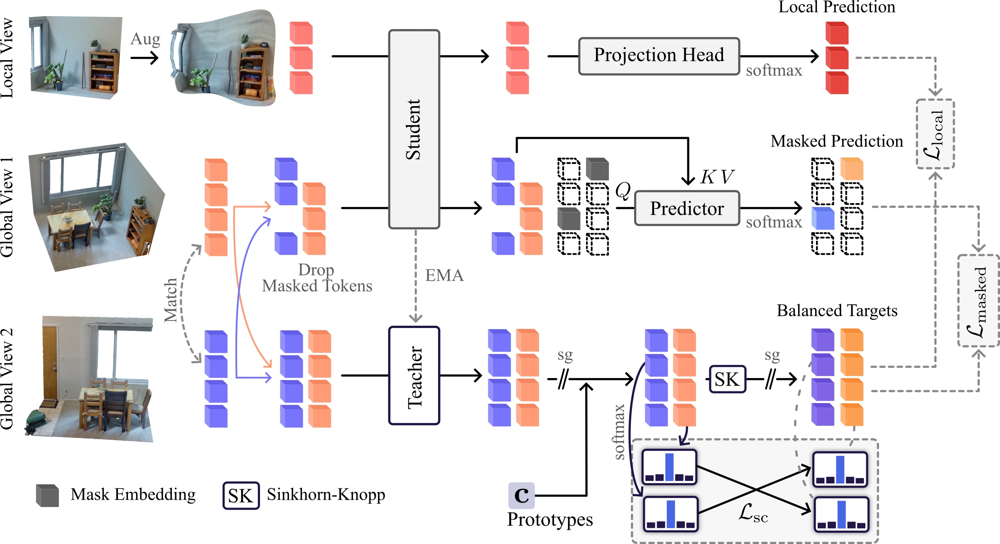

Abstract
Self-supervised learning has given rise to vision foundation models that learn general-purpose image representations transferable across downstream tasks, yet representation learning for 3D scenes has not achieved comparable success. Motivated by this, we identify key limitations of current 3D representation learning approaches and revisit their core design choices. We first replace the commonly used hierarchical PTv3 backbone with the Volume Transformer, a ViT-like architecture for 3D scenes. We then redesign two core objectives of modern approaches built around student–teacher networks: matching representations across views and predicting masked content from visible context. For the first objective, we separate the roles of teacher and student: the teacher provides clean, consistent targets while the student learns invariance to stronger perturbations. For the second objective, we prevent the student from accessing the masked geometry and instead require it to infer missing representations from visible context only. Finally, we redesign 2D-to-3D knowledge distillation, replacing direct regression of view-dependent image features with view-consistent supervision. Together, these changes form VINO, a framework that learns semantic representations of 3D scenes without labels. VINO substantially improves dense linear probing across indoor and outdoor benchmarks and transfers strongly to out-of-domain settings.
Compare the Features
All three models learn without labels, from point clouds only. Sonata (Volt) is Sonata's training with the Volume Transformer (Volt), the same backbone as VINO. Here VINO is trained without its 2D distillation stage. Click a point to see which points have similar features.
Method

Self Supervised Framework: We sample overlapping global and local views from a 3D scene. The EMA teacher encodes clean global views and softly assigns their tokens to learned prototypes, producing balanced targets. The prototypes are optimized independently by encouraging balanced and consistent assignments across global views. The student encodes strongly augmented local views and masked global views. For each local-view token, a projection head predicts the target of the matching global-view token. For the masked global views, a cross-attention-only predictor uses the visible tokens to predict the targets at the masked locations.
Distillation from a 2D VFM: The best-performing 3D encoders use distillation from pretrained 2D vision foundation models (VFMs). We find it works best to pretrain fully self-supervised first and add 2D-to-3D supervision only in a shorter second stage, in which the 3D encoder predicts the assignments of 2D VFM features to prototypes trained to be consistent across views.
Results
Linear probing for 3D semantic segmentation (mIoU). The first table's VINO is the model in the viewer above.
| Method | Backbone | Indoor | Outdoor | ||||
|---|---|---|---|---|---|---|---|
| ScanNet200 | ScanNet | ScanNet++ | nuScenes | Sem.KITTI | Waymo | ||
| Supervised† | Volt-B (94.3 M) | 36.2 | 77.7 | 51.7 | 81.3 | 70.6 | 71.5 |
| LAM3C | PTv3-B (108.4 M) | 25.3 | 66.0 | 34.2 | – | – | – |
| MSM | HUNet (67.6 M) | 26.8 | 68.7 | – | – | – | – |
| Sonata | PTv3-B (108.4 M) | 29.3 | 72.5 | 38.9 | 66.1 | 62.0 | 60.5 |
| PointINS | PTv3-B (108.4 M) | 29.6 | 72.4 | – | 74.6 | 68.0 | – |
| DOS | PTv3-B (108.4 M) | 30.7 | 73.9 | – | 74.8 | 68.3 | 67.0 |
| VINO (ours) | Volt-B (85.7 M) | 35.9 | 76.9 | 42.4 | 76.7 | 70.7 | 68.6 |
| Method | Backbone | Indoor | Outdoor | ||||
|---|---|---|---|---|---|---|---|
| ScanNet200 | ScanNet | ScanNet++ | nuScenes | Sem.KITTI | Waymo | ||
| Supervised† | Volt-B (94.3 M) | 36.2 | 77.7 | 51.7 | 81.3 | 70.6 | 71.5 |
| LargeAD | MinkUNet (37.9 M) | – | – | – | 47.8 | 35.8 | 36.1 |
| ScaLR | WaffleIron (59.4 M) | – | – | – | 67.8 | 55.8 | – |
| Concerto | PTv3-B (108.4 M) | 37.4 | 77.3 | 45.6 | 74.2 | 66.6 | 62.2 |
| Utonia | PTv3-B (137.3 M) | 36.4 | 77.7 | 44.7 | 75.5 | 67.7 | 63.8 |
| VINO (ours) | Volt-B (85.7 M) | 40.4 | 77.9 | 48.2 | 80.6 | 71.1 | 70.6 |
DOS and PointINS outdoor results use PTv3-S. †Trained end-to-end with Volt's decoder; serves as a reference.
BibTeX
@article{kruse2026vino,
title = {{VINO}: Revisiting 3D Representation Learning with Volume Transformers},
author = {Kruse, Adrian and Yilmaz, Kadir and de Geus, Daan and Engelmann, Francis and Leibe, Bastian},
journal = {arXiv preprint arXiv:2611.07176},
year = {2026}
}